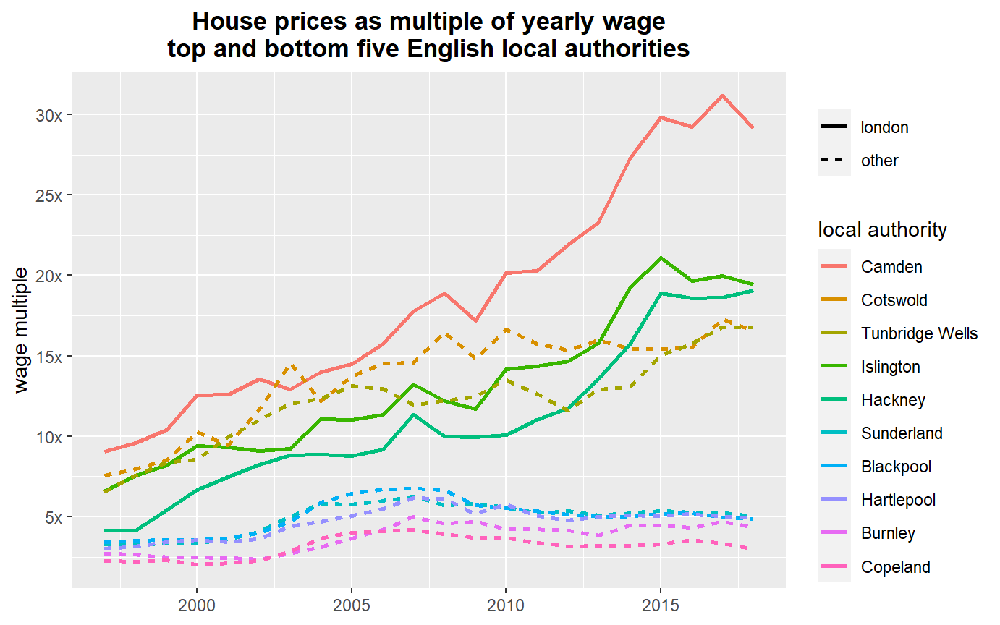

18 Prettifying a graph
So we made some graphs, but they’re lacking finesse. ggplot provides many ways to customise its appearance to make it more presentable. In this option, we’ll look at some of the most common functions used to do this. So here’s the plot we were just working on, for reference - but feel free to go and grab code for the earlier plots if you’d prefer. This will all apply to those too.
Here we’ll look at the top and bottom local authorities’ wage multiple (excluding Kensington and Chelsea, as we did before).
Note: this section uses the same price_n_wage dataframe from the section on merging. If you’ve done the facet option before this one, you may have over-written it. If so, here’s a quick option to reload. (Or run the code for that section again, whichever you prefer.)
#reload price_n_wage data we previously made, if it's been over-written with anything
price_n_wage <- readRDS('data/price_n_wage_fromjoinsection.rds')
price_n_wage2018 <- price_n_wage %>%
filter(year == 2018) %>%
arrange(-wagemultiple)
#choose whichever zone selection option you want. Here's the previous three.
#zoneselection <- price_n_wage2018 %>% filter(wagemultiple < 5.78)
#zoneselection <- price_n_wage2018 %>% slice(2:11)
#We'll use this one here.
#Top and bottom five, excluding Kensington and Chelsea
#Use a vector function for multiple selection
zoneselection <- price_n_wage2018 %>% slice(c(2:6,72:76))We’ve already seen how to change the label for the legends using labs and control legend order using fact_reorder - these are included here:
ggplot(price_n_wage %>% filter(Area %in% zoneselection$Area),
aes(x = year, y = wagemultiple, colour = fct_reorder(Area,-wagemultiple))) +
geom_line() +
labs(colour = 'area')The basic principle is to add cumulatively to a ggplot: just add a plus at the end of a line and then include our new tweak on its own line. An advantage of it being on its own line: we can comment out any particular feature easily to play around with the output.
Try any / all of the following. If you want to see them all together, skip ahead a few pages.
- Change the axis labels
The x and y axis labels can be changed with the xlab and ylab functions. So updating the y axis would look like:
ylab('wage multiple')
- Add some better ticks to the y axis scale
You can set any scale ticks completely manually. This can be done by adding a scale_y_continuous function.
scale_y_continuous(breaks = c(0,5,10,15,20,25,30))It’s also possible to over-ride the labels used for those ticks. Be careful to make sure both of these vectors are same length - it needs a one-to-one correspondence:
scale_y_continuous(breaks = c(0,5,10,15,20,25,30),
labels = c('0','5x','10x','15x','20x','25x','30x'))This tells ggplot exactly which breaks we want and how to label them. (The labels can be text or numbers.) So we have very fine control of these.
- Giving the plot a title
I always forget how to do this and need to google it! I invariably copy the code from here and amend it. We add a ggtitle and then make it bold by changing the theme.
The latest ggplot aligns titles to the left by default - you can include an hjust value in theme
ggtitle("House prices as multiple of yearly wage top and bottom five English local authorities") +
theme(plot.title = element_text(face="bold",hjust = 0.5))That’s a stupidly long title. You can wrap lines in the title by using backslash n where the lines should break. It’s hard to spot here: the backslash n is after wage and before top:
ggtitle("House prices as multiple of yearly wage\ntop and bottom five English local authorities")
- Removing axis titles entirely
One might think having the ‘year’ title for the x axis is a bit superfluous: years are self-explanatory. (Many say axes must always be labelled, mind!) Anyway, if you don’t like it, the theme function can again be used. Note here, we’re adding the to theme formatting we did for title above.
theme(plot.title = element_text(face="bold",hjust = 0.5)),
axis.title.x=element_blank())The same can be done with text and ticks using axis.text.x and axis.ticks.x (or y).
- Changing the line type and size
As we did when changing the sales count circles to grey, the line type and size can be altered in the geom_line function directly. Here’s a reference for the linetype number:
0 = blank, 1 = solid, 2 = dashed, 3 = dotted, 4 = dotdash, 5 = longdash, 6 = twodash
geom_line(size = 1, linetype = 5)
- Quickly creating a flag for a new aesthetic mapping
Perhaps you want to mark out which local authorities are in London. All we need for this: a single column marking which of the local authorities are in London. We could then use linetype to mark this.
In the current data, the three London zones are Camden, Islington and Hackney. You could obviously use some more sophisticated way to pick out your group but let’s just make it directly:
londonzones <- c('Camden','Islington','Hackney')We can then use dplyr to make a flag column (with actual labels rather than just a zero and one, as is common with flag columns.)
There’s a new function here: ifelse. As the name suggests, this just lets us say: if this condition is met, do this - else, do that. (That’s the best way to remember the order of the arguments too: `if, then: this, else that’.) We can combine it with the %in% operator.
price_n_wage <- price_n_wage %>%
mutate(inLondon = ifelse(Area %in% londonzones, 'london','other'))As always, take a look at the dataframe to confirm it’s done what you wanted it to. Or throw it into the ggplot and see…
- Bringing all that together
Here’s those options all in the ggplot code - including the new linetype aesthetic mapping. It also hides the inLondon variable name above the linetype legend.
ggplot(price_n_wage %>% filter(Area %in% zoneselection$Area),
aes(x = year, y = wagemultiple, colour = fct_reorder(Area,-wagemultiple))) +
geom_line(aes(linetype = inLondon), size = 1) +
ylab('wage multiple') +
labs(colour = 'local authority', linetype = ' ') +
scale_y_continuous(breaks = c(0,5,10,15,20,25,30),
labels = c('0','5x','10x','15x','20x','25x','30x')) +
ggtitle("House prices as multiple of yearly wage\ntop and bottom five English local authorities") +
theme(plot.title = element_text(face="bold",hjust = 0.5),
axis.title.x=element_blank())